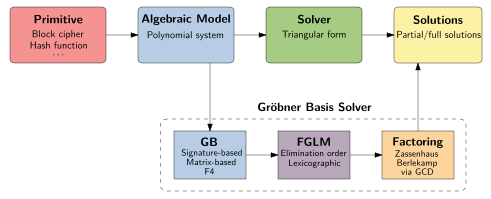

Solving Systems of Non-Linear Polynomial Equations
First ideas related to Gröbner basis theory go back as early as the 1920s. The discovery of the concept behind Gröbner bases is independently credited to Heisuke Hironaka (Japan, 1964) and Bruno Buchberger (Austria, 1965). It seems, history (or, at least, the naming convention) has favoured the Austrian researcher in this regard. After all, Wolfgang Gröbner, the PhD supervisor of Bruno Buchberger, is the namesake of what we call Gröbner bases today…
Gröbner Bases and Cryptography
Before I give some intuition about Gröbner bases, let us discuss why they are important and what they are used for in cryptography. Briefly speaking, cryptographers use Gröbner bases as a tool for (symbolically) solving systems of polynomial equations.1 But why are systems of polynomial equations important in cryptography?
The overwhelming majority of symmetric cryptographic primitives (like block ciphers, stream ciphers, hash functions, cryptographic permutations) as well as many asymmetric cryptosystems (like public-key encryption schemes, digital signature schemes, key-encapsulation mechanisms) can be modeled as a system of polynomial equations (over a finite field). Such a model can be used to analyze the security of the underlying cryptosystem (and, potentially, to break it).2 Cryptography researchers usually call this type of analysis algebraic cryptanalysis.
The authors of [CW09] attribute the first documented use of Gröbner bases in symmetric cryptography to [SK98], as an improvement over the linear cryptanalysis of the Data Encryption Standard (DES). The adoption of Rijndael as the Advanced Encryption Standard (the successor of DES) in 2002 [DJ02], together with the simple algebraic structure of Rijndael, motivated a considerable amount of research on algebraic cryptanalysis, and, in particular, on Gröbner basis techniques. Some relevant research results from this time are [COP02], [C02], [AFI+04], [CMR06], [BPW06].
Starting around 2015, the increasing popularity of “algebraic”3 cryptographic permutations and hash functions tailored for MPC-, FHE- and ZKP-protocols has led to a renewed interest in Gröbner basis cryptanalysis. This is because Gröbner basis techniques tend to be one of the most successful attack vectors in this context. As an example and to the best of my knowledge, my joint research in [ACG+19] marks the first successful Gröbner basis analysis of a real-world hash function [AD18]. This is, indeed, a strong result.
But, to keep things in perspective, it is fair to say that back in 2018/2019 the whole area of algebraic cryptographic primitives was a comparatively young field of research and much less well-understood as other, more established, areas of the design space in symmetric cryptography. Although knowledge around designing and analyzing algebraic primitives has advanced since then, the last sentence still holds true today.
As of now, in February 2025, there exist many designs for SNARK-friendly cryptographic primitives (Poseidon, Reinforced Concrete, Monolith, Anemoi, Rescue, Tip5, Arion, …). I recommend checking out the STAP Zoo, it is an excellent tracker of research in this area and, at the time of writing this article, the single most comprehensive resource one can find. Especially the communities around building decentralized systems (“web3”) and systems for verifiable (confidential) computation (“programmable cryptography”) push the adoption of SNARK-friendly primitives. With this push, also Gröbner bases will remain important as one of the main tools to assess the security of these primitives.
The Root of the Matter: Solving Systems of Polynomial Equations
We turn our attention to the general procedure of Gröbner basis cryptanalysis. Conceptually, it consists of two steps.
- Modelling a cryptographic primitive as a system of polynomial equations with unknown parameters as variables. A parameter of interest might be the secret key of a block cipher or a preimage of a given hash value.
- Solving the system of polynomial equations using Gröbner basis techniques.
Euation systems stemming from problems in symmetric cryptography most often have a finite number of solutions.“Solving” may have one of the following meanings: $(a)$ finding exactly one solution, $(b)$ finding all solutions, or $(c)$ finding that no solution exists. The situation where there is no solution might arise in a so-called hybrid form of Gröbner basis cryptanalysis. Here, the idea is to combine exhaustive search with Gröbner basis computations: we fix some of the (unknown) variables and, subsequently, solve the remaining equation system. The remaining equation system might be ill-conditioned, and, hence, not admit any solution. In practice, the solving step is usually a triad of computations.
- Computing a $degrevlex$ Gröbner basis for the zero-dimensionl input system using an algorithm such as F4 [F99], or F5 [F02].
- Converting the \textit{degrevlex} Gröbner basis to a $lex$ Gröbner basis (or any other elimination order, which facilitates variable elimination) using an algorithm such as FGLM [FGL+93], or a probabilistic [FGH+14] or sparse variant thereof [FM11], [FM17].
- Factoring the univariate polynomial in the $lex$ Gröbner basis using any polynomial factoring algorithm. Determine the solutions of the corresponding variable. If needed, back-subsitute any solution into other equations in the $lex$ Gröbner basis to obtain a partial or full solution of the system.
The following figure summarizes above description.
Having presented a little insight how Gröbner bases are applied in cryptanalysis, I would like to close this article with a comparison of Gaussian row reduction and Gröbner basis algorithms. The aim is to build some intuition about Gröbner bases and why they can be used to solve systems of non-linear polynomial equations.
Triangularize and Conquer
In secondary school, we all are taught a basic algorithm to solve systems of linear equations: Gaussian elimination. The basic idea is the following: we successively eliminate variables in the equation system until we get a linear equation in only one variable. From this univariate equation we can easily derive the solution for the corresponding variable and back-substitute into the other equations to obtain the full solution. The resulting shape of the equation system after Gaussian elimination resembles a triangle (or staircase, if you like). Hence, this process is also called triangularization or reduction to row echelon form.
What I have just said about triangularization is true, but it is only half of the truth. I should have been a bit more precise. I should have said: if a unique solution exists, we proceed as described. It is entirely possible, that the equation system has no solution. Or infinitely many solutions. Phrased more formally: it is well known4 that the set of solutions to a linear system of equations forms a vector space (or affine space). In any of the above cases, triangularization yields a basis of this vector space.
As a first mental model of Gröbner basis algorithms it is valid to think about them as a generalization of Gaussian elimination to the case of non-linear systems of polynomial equations. Instead of a linear equation system, a Gröbner basis algorithm takes as input a polynomial equation system (which, in general, is non-linear but can be linear as well) and outputs a triangularized form of this system.5 From this triangularized form, we can extract the solutions to the initial system in a straightforward manner.
The following figure aims to highlight the analogy between Gaussian elimination and the computation of a Gröbner basis.

-
Independent of cryptography, Gröbner basis theory is an area of ongoing research by itself and continues to be actively developed. ↩︎
-
“Breaking” a cryptosystem can mean, both, finding an attack in practice or also finding a (theoretical) vulnerability that violates the security claims made by the designers. A theoretical vulnerability might not necessarily translate to an attack realizable with practical computing resources. ↩︎
-
“Algebraic” cryptographic primitives often have a simple algebraic structure, i.e., their building blocks are based on low-degree polynomial power maps like $x\mapsto x^3$. Moreover, they often work over a (large) prime field $\mathbb F_p$. In contrast, more “traditional” primitives, like the AES [DJ02] or Keccak [BDP+11], work with vectors of bits or bytes, i.e., they operate over some binary extension field $\mathbb F_{2^n}$. ↩︎
-
At least among the mathematically inclined. ↩︎
-
To be more precise, and also in reference to what has been said before about algebraic cryptanalysis: technically speaking, only a Gröbner basis with respect to the $lex$ term order admits this triangular shape. But for the sake of keeping technicalities at a minimum, I deliberately chose to be imprecise here. This is probably a suitable point to mention an excellent (if not the best) textbook on the theory behind Gröbner bases [CLO15]. ↩︎